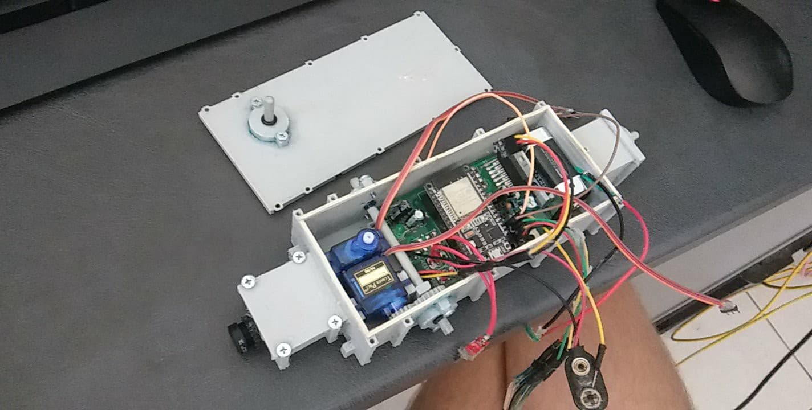

I'm Devon Pringle.
Some know me as one of the Thing conveners and the runner up in the Bauple's Sunshine Puppy Fun Competition. Most call me a yellow belly cause they're cheeky, but my house mates call me Big D.
The Submarine
One of the greatest feats of my life. Still incomplete and very not waterproofed its an elegant design used for subterrainian explorations. The end goal is to find this blokes thick leather hat at the bottom of Gardener's Falls.